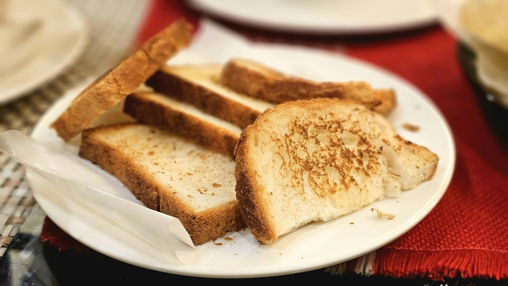

Super Simple Cinnamon Toast
Home

Description
This is the ultimate quick comfort food. It takes less than five minutes,costs almost
nothing and tastes incredible with a hot cup of tea or coffee.
Ingredients
- 4 slices of bread
- 1 tablespoon unsalted butter(softened)
- 1 teaspoon granulated sugar
- 1/4 teaspoon ground cinnamon
Steps
- Toast the bread:Put your bread slices into a toaster until they are golden brown and crunchy
- Mix the sugar spice:While the bread toasts, stir the sugar and ground cinnamon together in a small bowl
- Butter and sprinkle:Spread the softened butter evenly over the hot toast, then immediately shake the cinnamon sugar Mix
over the top so its melts into the butter.